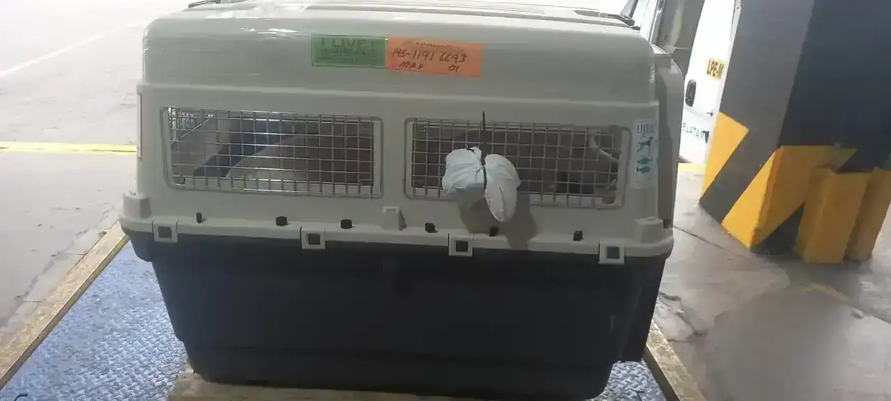
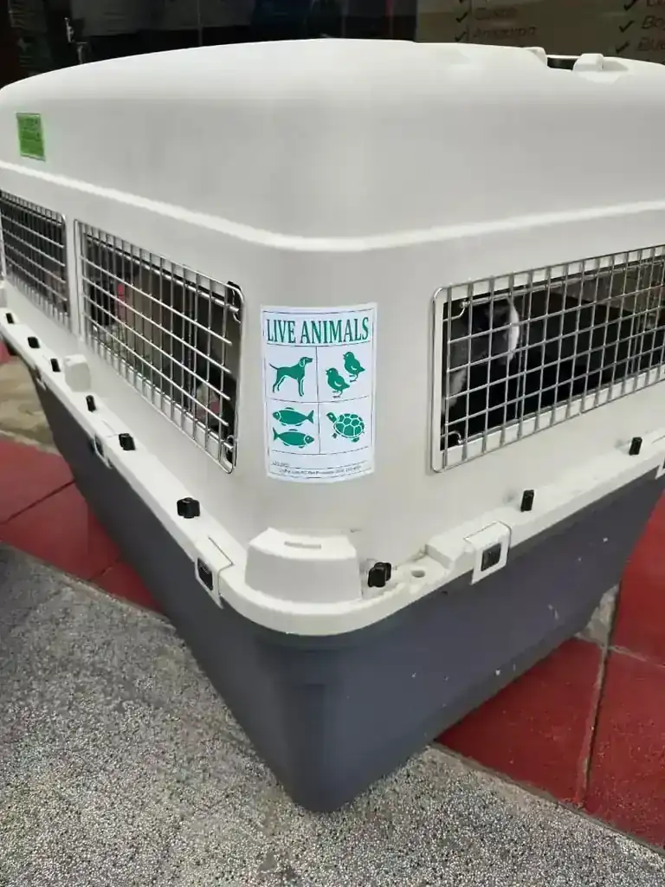
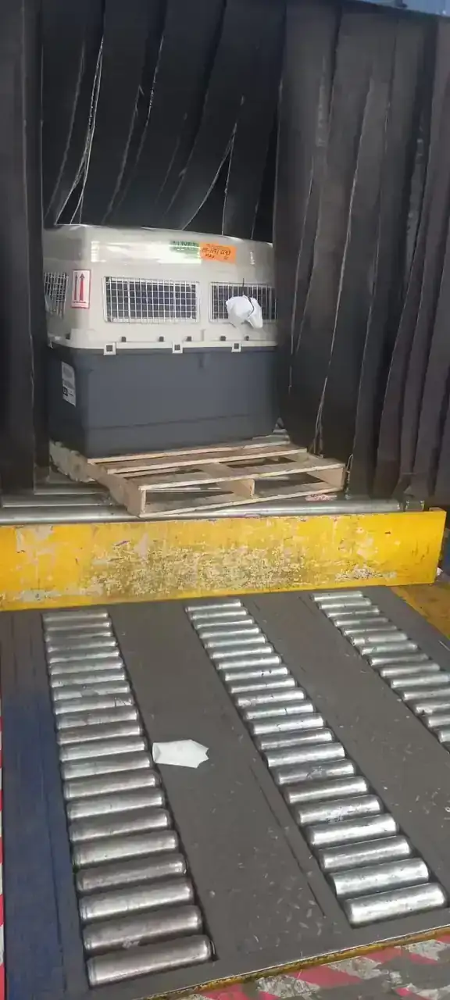
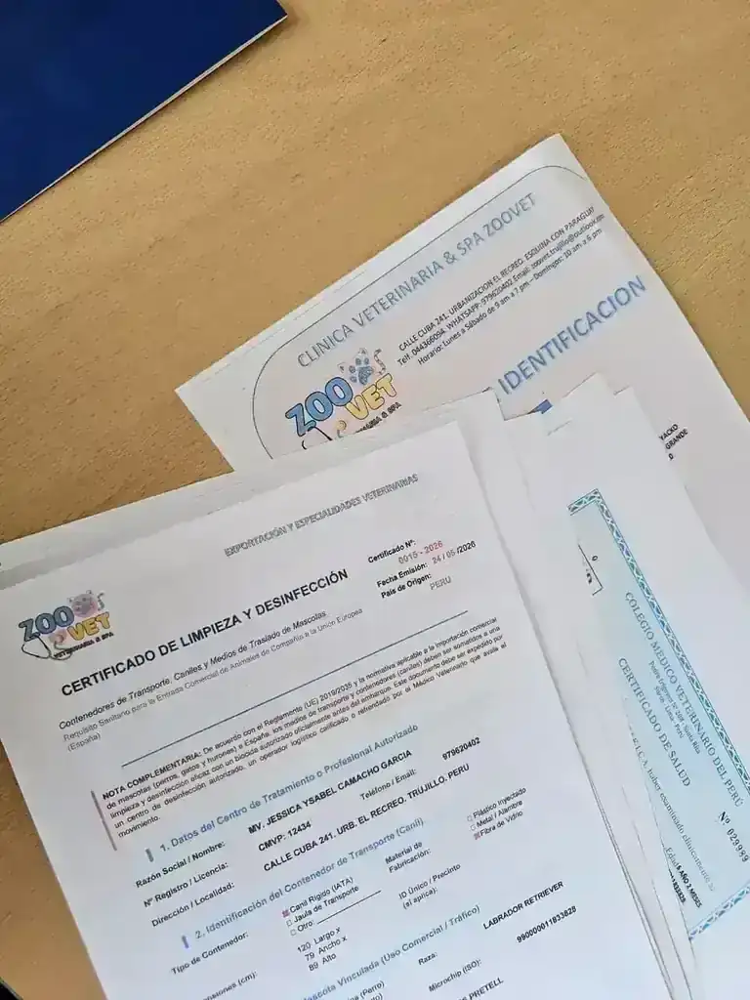
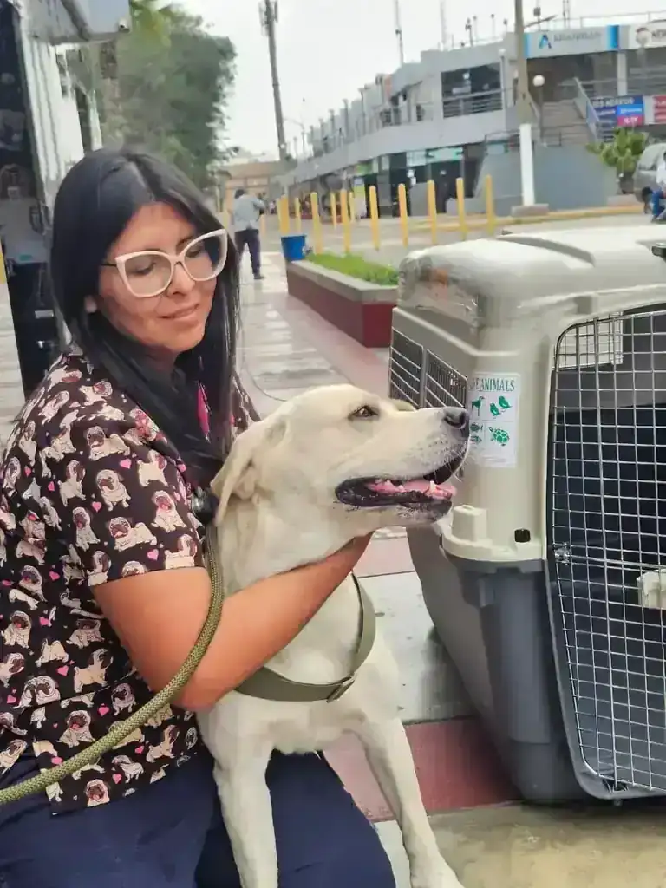

Clínica Veterinaria · Cargo Internacional
Exporta tu Mascota desde Perú con Respaldo Veterinario Certificado
¿Qué incluye el proceso de exportación internacional de mascotas desde Perú?
Exportar una mascota desde Perú es un proceso médico-regulatorio-logístico de múltiples partes. El Certificado Zoosanitario de Exportación (CZE) emitido por SENASA tiene una ventana de validez de 5 días — lo que exige coordinación precisa entre la evaluación clínica veterinaria, la emisión documental y el vuelo confirmado. En Zoovet Travel, el veterinario habilitado por SENASA y colegiado CMVP (N.° 12434) que evalúa clínicamente al animal (aptitud para el vuelo, historial vacunal, riesgo por raza) es el mismo que firma el CZE.
El proceso requiere además coordinación activa con el broker o agente receptor en el país de destino — parte crítica que determina la recepción y el despacho aduanero. Cada país aplica regulación independiente: incluso dentro de la Unión Europea, cada estado miembro puede tener variaciones sobre el marco base del Reglamento 576/2013. El protocolo incluye microchip ISO 11784/11785, vacunas, serología RNATT/FAVN (Fluorescent Antibody Virus Neutralization) cuando el destino lo exige, y gestión del expediente completo desde Trujillo — sin necesidad de trasladar al animal a Lima.
Gestionamos la exportación internacional de tu mascota de principio a fin — evaluación clínica, protocolos SENASA, serología de rabia y coordinación logística. Todo desde Trujillo, sin que tengas que viajar a Lima.
Microchip ISO 11784/11785 · Serología RNATT/FAVN · Certificado Zoosanitario de Exportación · Protocolos por destino. España, USA, Francia, Alemania, UAE, Japón, Australia y más.

Kennel IATA certificado · Documentación completa
Caso real — exportación internacional desde Perú

Etiquetado IATA y guía de carga

Inspección documental SENASA

Llegada segura al destino
Del aeropuerto de Lima al destino — documentado en cada paso
El Diferenciador Clínico
Exportar una mascota no es un trámite documental. Es un proceso médico con consecuencias reales sobre la salud del animal — y eso exige que quien firma el certificado sanitario sea también quien evaluó clínicamente al animal, conoce su historia, su condición respiratoria, su estado vacunal y sus factores de riesgo específicos.
Nuestro equipo veterinario, colegiado ante el CMVP (Nº 12434) y autorizado por SENASA, realiza la evaluación clínica de cada animal antes de emitir cualquier documento. No subcontratamos la parte médica — es el núcleo del servicio.
La legislación zoosanitaria internacional cambia sin previo aviso. Un requisito válido para España hace seis meses puede haber sido modificado. Nuestro equipo monitorea esos cambios de forma activa — es parte del trabajo, no una consulta adicional.
Lo que hacemos distinto
- Evaluación clínica previa al inicio de cualquier trámite
- Criterio médico sobre aptitud para el vuelo, especialmente en razas de riesgo
- Seguimiento activo de cambios regulatorios por país de destino
- Firma veterinaria con validez ante cualquier autoridad zoosanitaria del mundo
- Expediente completo auditado antes del embarque

Evaluación clínica incluida
Cada animal que exportamos pasa por evaluación médica completa antes de emitir documentos. Protocolo apto para vuelo, revisión de riesgos respiratorios y criterio veterinario documentado.
Destinos Principales
Requisitos clave por país de destino. Los protocolos completos varían según la especie, raza y estado vacunal del animal. Consulta tu caso específico.
Unión Europea
España
- Microchip ISO 11784/11785 implantado antes de la vacunación antirrábica
- Vacuna antirrábica vigente con refuerzo según protocolo del fabricante
- Certificado zoosanitario oficial SENASA/TRACES, emitido máximo 10 días antes del vuelo
Tiempo estimado: 3–6 semanas
Guía completa →América del Norte
Estados Unidos
- Microchip ISO 11784/11785 o tatuaje legible para perros
- Vacuna antirrábica vigente (exigida para perros; restricciones adicionales USDA 2024)
- Certificado de salud USDA/APHIS emitido por veterinario acreditado
Tiempo estimado: 4–8 semanas
Guía completa →Unión Europea
Francia
- Microchip ISO 11784/11785 implantado antes de la primera vacunación antirrábica
- Vacuna antirrábica vigente con registro en pasaporte veterinario
- Certificado oficial TRACES emitido por autoridad competente SENASA
Tiempo estimado: 3–6 semanas
Unión Europea
Alemania
- Microchip ISO 11784/11785 con registro previo a vacuna antirrábica
- Vacuna antirrábica vigente conforme al protocolo del fabricante
- Certificado sanitario oficial TRACES/SENASA con inspección veterinaria de salida
Tiempo estimado: 3–6 semanas
Oriente Medio
Emiratos Árabes Unidos
- Microchip ISO 11784/11785 y vacuna antirrábica con refuerzo al día
- Serología de rabia (RNATT/FAVN) con título ≥ 0.5 UI/ml en laboratorio autorizado OIE
- Permiso de importación previo emitido por MOCCAE (Ministerio de Medio Ambiente UAE)
Tiempo estimado: 3–5 meses
Asia Pacífico
Japón
- Microchip ISO + 2 tomas de serología FAVN separadas por al menos 30 días, ambas con título ≥ 0.5 UI/ml
- Período de espera mínimo de 180 días desde la segunda serología positiva antes del vuelo
- Notificación previa al Ministerio de Agricultura de Japón (MAFF) y cuarentena de hasta 180 días en destino si el protocolo no se completa correctamente
Tiempo estimado: 8–12 meses mínimo
Guía completa →Oceanía
Australia
- Microchip ISO + vacuna antirrábica vigente + serología FAVN con título ≥ 0.5 UI/ml
- Tratamiento antiparasitario (Praziquantel) y desparasitación interna en plazos específicos pre-vuelo
- Cuarentena obligatoria en destino (mínimo 10 días en facility autorizado por DAFF)
Tiempo estimado: 6–10 meses
Europa — Post Brexit
Reino Unido
- Microchip ISO 11784/11785 implantado antes de la vacuna antirrábica
- Vacuna antirrábica con espera de 21 días desde primovacunación antes del viaje
- Tratamiento antiparasitario con praziquantel aplicado entre 24 y 120 horas antes del embarque (solo perros)
Tiempo estimado: 4–8 semanas
Guía completa →Los requisitos pueden variar según la especie, el estado vacunal previo y los protocolos vigentes al momento de la exportación. La primera consulta es el primer paso para conocer exactamente qué aplica a tu caso.
El Proceso en 5 Pasos
Consulta diagnóstica
Evaluamos el destino, la especie, la raza, el estado vacunal actual y los factores de riesgo del animal. Aquí determinamos si el viaje es viable, qué protocolo aplica, cuánto tiempo toma y qué cuesta. Sin compromiso de contratación.
Protocolos clínicos
Implantación de microchip ISO 11784/11785, actualización de esquema vacunal, desparasitación interna y externa, y serología de rabia RNATT/FAVN cuando el destino lo exige. Todo ejecutado por nuestro equipo veterinario con los plazos regulatorios correctos.
Gestión SENASA
Tramitamos el Certificado Zoosanitario de Exportación (CZE) ante SENASA con los tiempos de emisión coordinados al vuelo confirmado. El certificado tiene vigencia limitada — su emisión fuera de ventana invalida el embarque.

Coordinación logística
Orientamos sobre la caja de transporte IATA correcta para el tamaño y peso del animal, los requisitos de la aerolínea, y la documentación de embarque. Verificamos que el expediente completo esté en orden antes de la entrega en aeropuerto. Coordinamos embarques con LATAM Cargo, Avianca Cargo, American Airlines Cargo, Air France–KLM Cargo e Iberia, entre otras aerolíneas aliadas.

Pesaje oficial en la terminal de carga
Seguimiento post-embarque
Estamos disponibles para resolver consultas durante el tránsito y orientar sobre el proceso de ingreso en el país de destino. Si hay cuarentena, te explicamos cómo funciona y qué esperar.
Seguimiento del vuelo en tiempo real
Envíos Realizados
Mascotas que han llegado a sus destinos con protocolo completo y sin contratiempos. Cada caso es único — cada expediente, auditado.

Caso real · Cargo internacional desde Trujillo, Perú
5 continentes
Destinos alcanzados con protocolo veterinario completo
Destinos con envíos realizados
"Desde que iniciamos la coordinación, todo el proceso médico y documental se gestionó desde Trujillo. La mascota llegó sin problemas."
— Propietario, exportación a Europa
Llegada a Madrid · LIM–MAD · Protocolo completo

Pasaporte UE + FAVN + SENASA · Documentación completa para España
Galería de Operaciones y Logística IATA






Preguntas Frecuentes
Recursos para Planificar el Viaje de tu Mascota
Guías técnicas y protocolos redactados por nuestro equipo veterinario. Sin paywalls, sin formularios.
Documentación
Certificado Zoosanitario de Exportación SENASA: qué es y cómo se tramita
Serología
Serología de rabia RNATT/FAVN: cuándo se exige y cómo se tramita
Identificación
Microchip ISO 11784/11785: qué es y dónde tramitarlo en Trujillo
Seguridad
¿Es seguro que tu mascota viaje en bodega? Lo que necesitas saber
Sin ir a Lima
¿Dónde tramitar la exportación de mascotas en Trujillo? Guía completa
Planificación
¿Cuánto tiempo antes de viajar debes iniciar los trámites de tu mascota?
¿Ya calculaste si tu mascota puede viajar en tu fecha exacta? El Planificador de Viaje calcula el timeline inverso, semáforo de viabilidad y PDF descargable en 2 minutos.
Calcular ahora →Consulta inicial · Sin compromiso
¿Cuándo viaja tu mascota?
Cuéntanos el destino y el animal. Evaluamos el caso, te explicamos el protocolo exacto, los tiempos reales y el costo — antes de que comprometas cualquier reserva de vuelo.
Cotizar por WhatsAppO escríbenos a contacto@zoovettravel.com